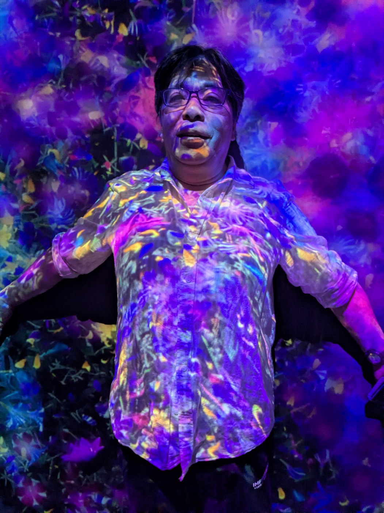
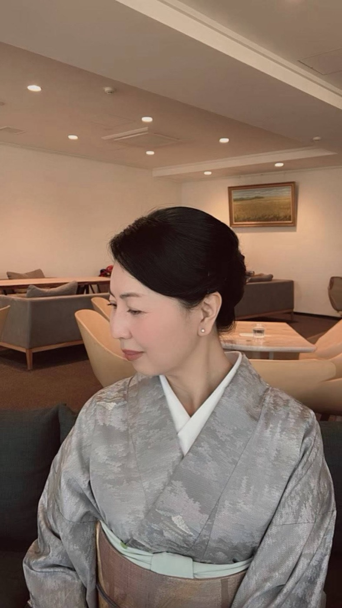
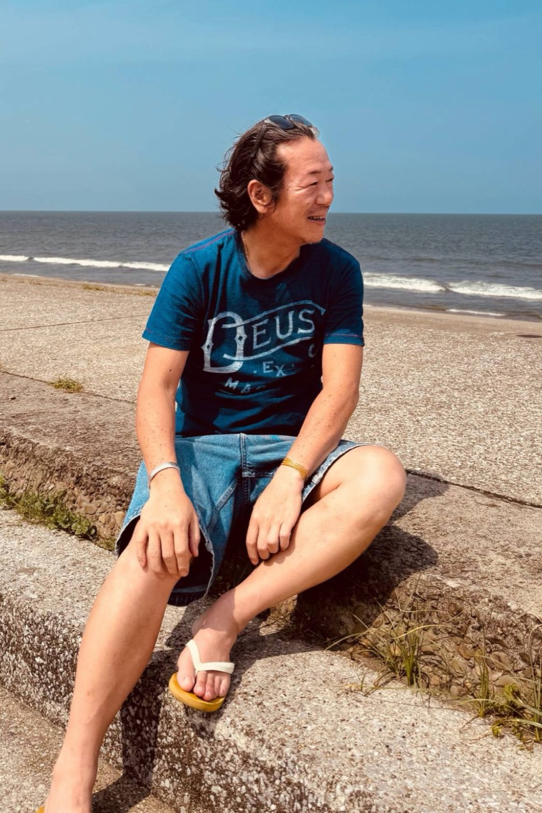

プロフィール
財団を担う3人。タブで切り替えて読めます。

甲﨑 澄彦 SUMIHIKO KOUZAKI（ZAK）
中学生の頃から音に興味を持ち、その神秘性に惹かれ上京。特殊音響効果技術者として渡米、探究心と情熱で動いた20代。米国先住民との出逢いによって彼らの生き様に心打たれ、その後の10年間を各国の先住民の衣食住文芸の調査研究に打ち込む。ホピ族の長老マーティン・ガスウィスーマより「ZAK MOON」と呼ばれることとなる。
生体と周波数が織りなす相互作用のメカニズムに着目。その可能性を追究するため、約40年間にわたり日本国内で独自の振動工学・量子生物学的アプローチの研究を重ねる。「人間の脳と意識もまた、五感を通じて現実という情報空間をレンダリングしている一種のメタバースである」という視点に到達し、素粒子の振動情報に直接アプローチする次世代デバイス「ディメンションシステム」を開発。
先住民に伝わる伝統的な手当てや薬草の知識、人体の構造研究に基づき完成させたボディグラビティコントロール法（徒手による整体の技法）を、全国のサロンへ指導している。趣味は映画鑑賞や未知の真実の探求、自然を楽しむこと。

浅井 理恵子 RIEKO ASAI（MARIA）
20代で観光・イベント等を主体とした様々な仕事に携わり、レストラン・バー等の会社経営を行う。その後、結婚・出産・離婚・会社倒産・再婚を経験し、子育てと仕事、自分の人生を楽しむ「女性の自立」が自身のテーマとなる。
30代では内外両面からの美と健康を目指すエステサロンを起業し、技術とサロン作りのアドバイザーとして活動。また、司会事務所代表として25年、4,000組以上の結婚式司会と司会者育成を続けている。ディメンションデバイスのナレーション「中の人」。
全国各地を飛び回り、各サロンの運営やイベント企画のサポートなどのマネジメント全般、財団の経営、デバイス製作等を行う。好きなものは動植物、海と川、藤井風、coffee。趣味はキックボクシング、筋トレ、ヨガ、旅行、JAZZ。

前田 博史 HIROSHI MAEDA（GORO）
子供の頃から野球とモノづくりが大好きで、大学卒業後はサラリーマンを3年経たずに卒業。その後あらゆる職につき、30代にはLEDを使った当時は次世代の光を用いて起業。
2022年10月4日にZakさん、Mariaさんと出逢い、今までの人生観に新しい世界観が加わり、あらゆる情報と行動が重なり今に至る。現在はディメンション・ゼロの発展のために、おふたりの発想と自身のカタチにする行動力とがリンクしあって、新しい商品ができることを楽しんでいる。
モットーは、生きるをテーマに愉しく生きる。趣味はサーフィン、食べ呑み歩き、料理。